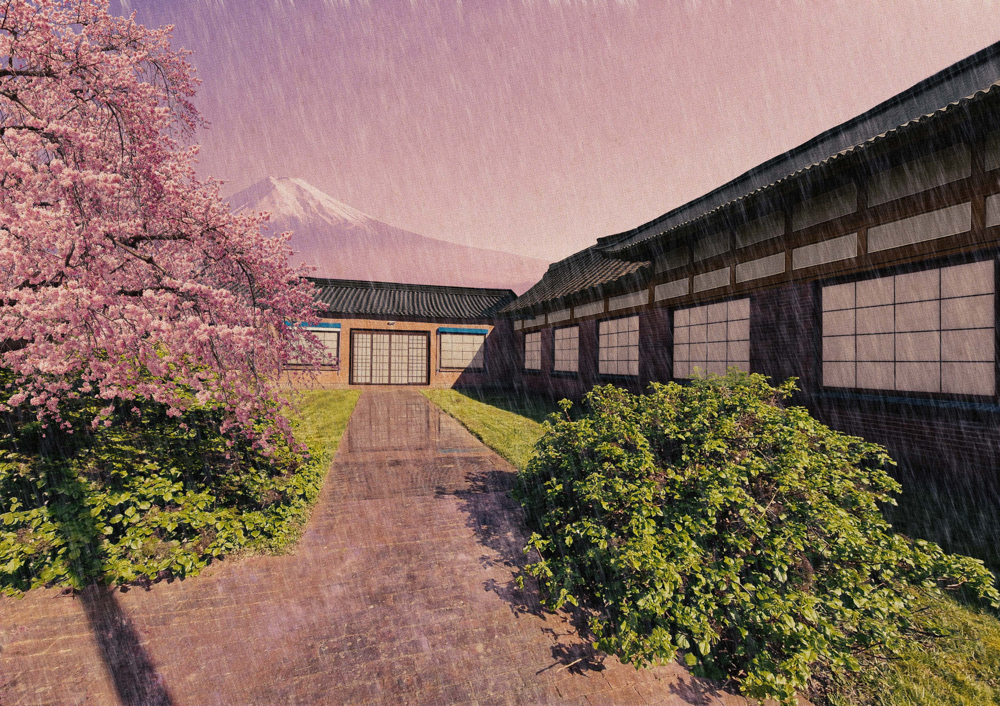
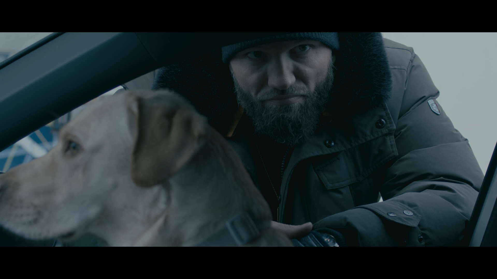
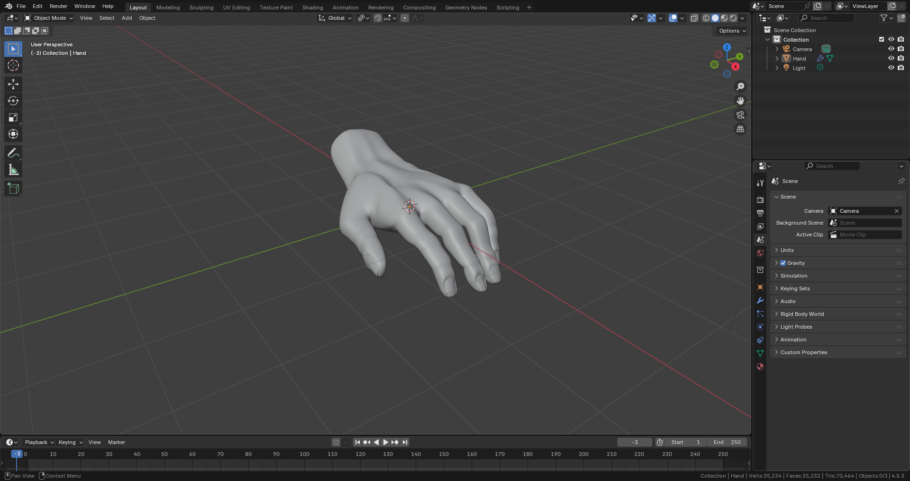
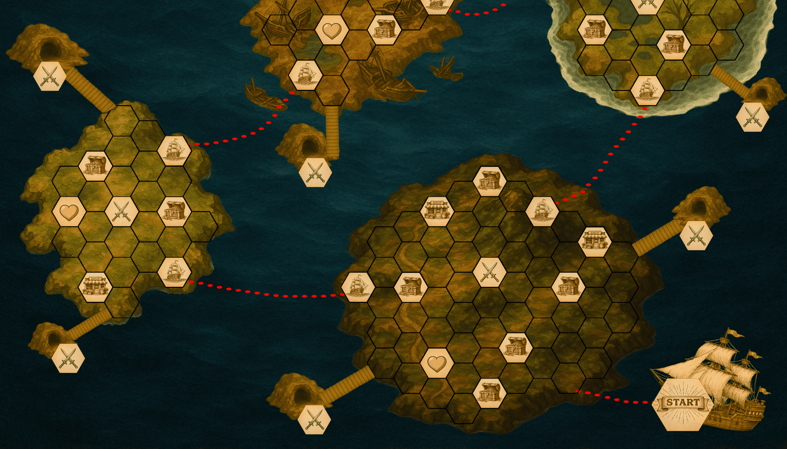
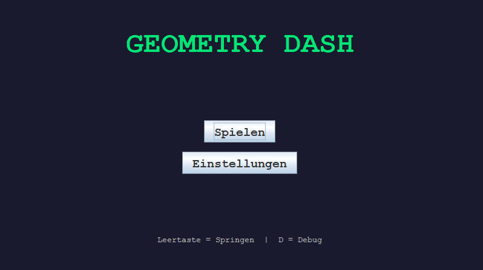
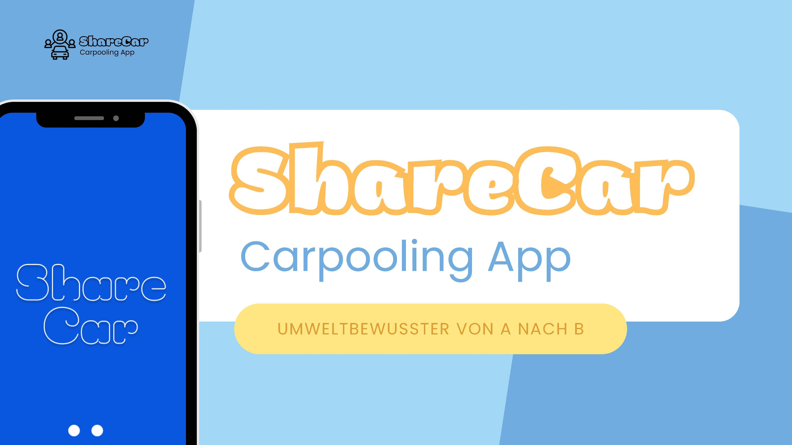
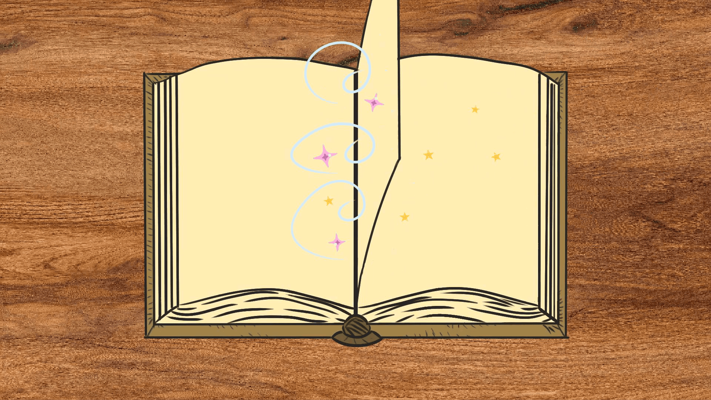
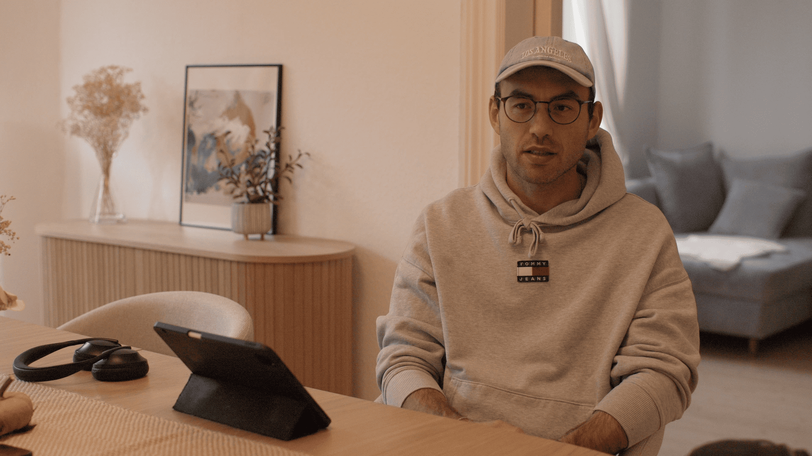
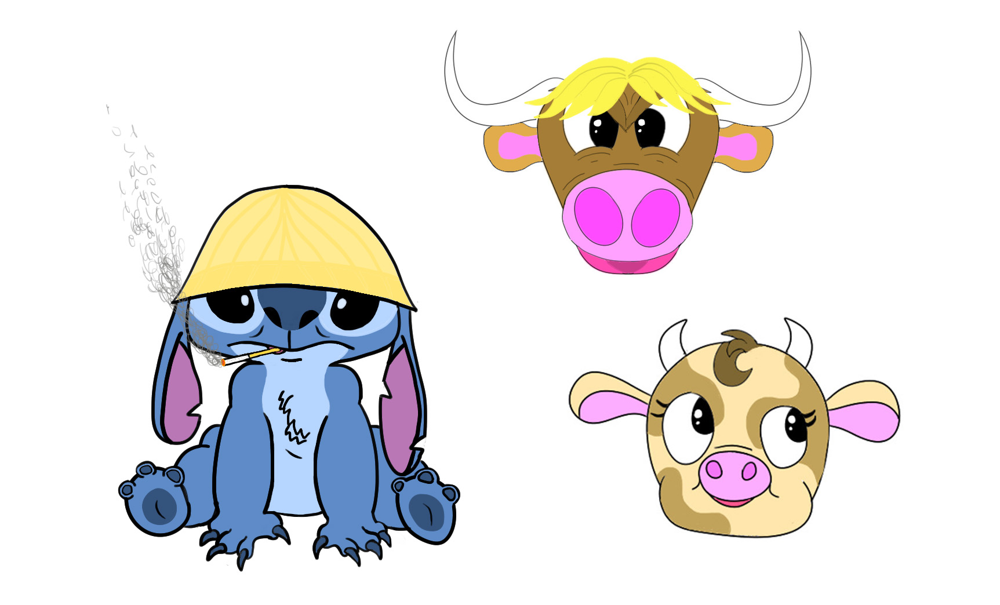
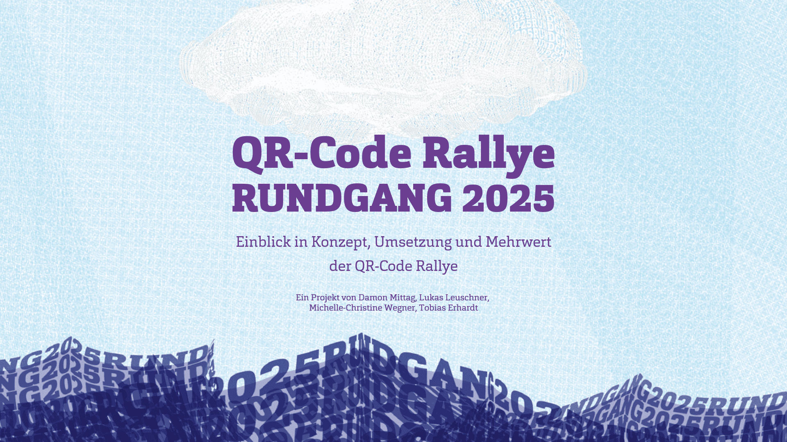

Projekte
Hier findest du eine Auswahl meiner bisherigen Arbeiten aus dem Medieninformatik-Studium - von Grafikdesign über Videoarbeit bis hin zu Webentwicklung. Die Sammlung wächst mit jedem Semester weiter.
-

🌸
Ein kleines Stück Japan auf dem Campus
Ein selbst fotografiertes Bild des Hochschulcampus wurde in Adobe Photoshop kreativ neu interpretiert und durch gezielte Bildbearbeitung in eine japanisch inspirierte Szene verwandelt.
Mehr sehen -

🎥
Kurzfilm "The Gift"
Gemeinsam mit drei Kommilitonen entstand der Kurzfilm „The Gift“, inspiriert von einer Rachegeschichte im Stil von John Wick. Der Film wurde mit professionellem Filmequipment umgesetzt und als eigene filmische Interpretation realisiert.
Mehr sehen -

🖐️
3D-Modell meiner Hand
Ein in Blender erstelltes 3D-Modell meiner eigenen Hand mit Fokus auf organische Modellierung, Proportionen und realistische Darstellung im 3D-Raum.
Mehr sehen -

🎲
Brettspiel Final Harbor
Gemeinsam mit drei Kommilitonen entstand das Brettspiel „Final Harbor“, ein Piraten-Race-Game mit Deck-Building- und Open-World-Elementen. Das komplette Spiel wurde inklusive aller Materialien selbst entwickelt und gestaltet.
Mehr sehen -

🎮
GeometryDash - Klon
Ein größtenteils selbst entwickelter Klon des Spiels Geometry Dash, umgesetzt in der Programmiersprache Java. Das Projekt umfasst zentrale Gameplay-Mechaniken sowie eine eigene technische Umsetzung der Spielphysik und Levelstruktur.
Mehr sehen -

📱
App ShareCar
Gemeinsam mit vier Kommilitonen entwickelte App „ShareCar“ zur Bildung von Fahrgemeinschaften mit Fokus auf umweltbewusste Mobilität und Verkehrsreduktion.
Mehr sehen -

🎬🐱
2D-Animationsvideo
Gemeinsam mit fünf Kommilitonen entstand ein 2D-Animationsvideo über zwei verspielte Katzen, von der Idee bis zur Umsetzung.
Mehr sehen -

🎬
Interview Introduction
Eine kurze filmische Interview-Szene, in der eine Person von der Straße in ein Haus geht, sich setzt und anschließend interviewt wird. Der Fokus liegt auf Inszenierung, Kameraführung und einem realistischen, dokumentarischen Aufbau.
Mehr sehen -

🎨✏️🎬
Sketches & Animations
Eine Sammlung weiterer Zeichnungen, Character-Designs und Storyboards sowie kleiner Animationen. Die Arbeiten zeigen verschiedene kreative Ansätze in den Bereichen Illustration, Figurenentwicklung und Bewegung.
Mehr sehen -

📋
Projektplanung & Umsetzung
Gemeinsam mit drei Kommilitonen entstand ein Projekt zur Umgestaltung des jährlichen Rundgangs an der Hochschule Flensburg mit Fokus auf Projektplanung, Organisation und Umsetzung eines realen Hochschulprojekts.
Mehr sehen